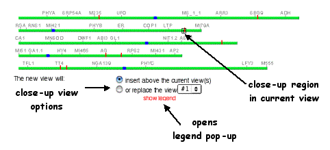
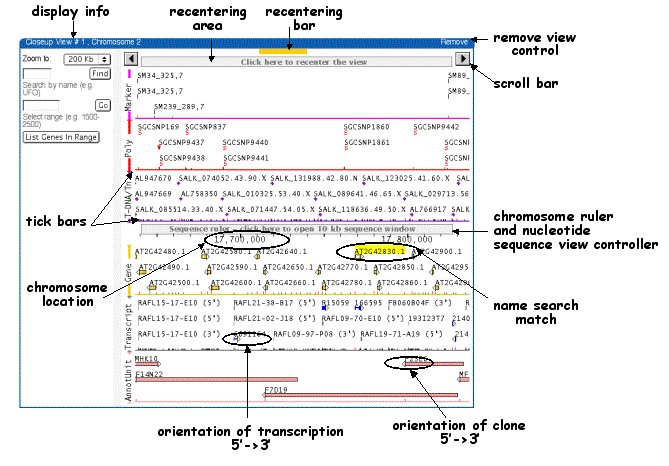
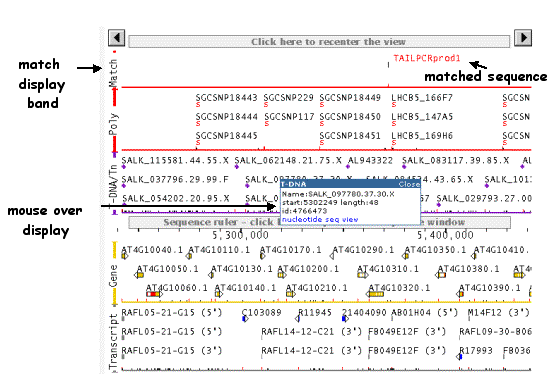
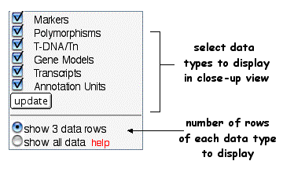
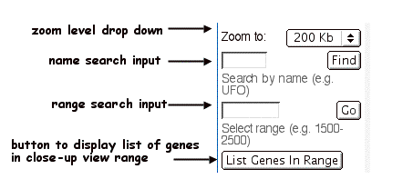
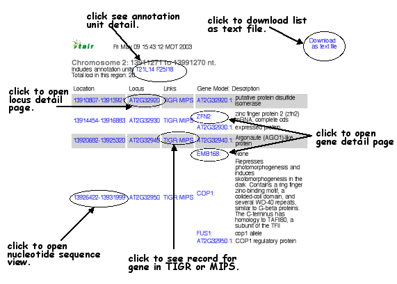

The SeqViewer Closeup Page
The sequence viewer close up page displays a clickable view of the whole Arabidopsis genome on top and one or more close up views displayed below.The global controller is used to select the types and amount of data to display over all, and the single view controls permit independant scrolling, searching and zooming of individual views.Contents
Whole Genome View
Closeup View
Sequence Search Hit Close up view
Closeup View Legend
Global Closeup Controls
Single View Controls
Display List of Genes in View
Whole Genome View
The SeqViewer Closeup Page displays a clickable view of the whole Arabidopsis genome at the top.The centromeres are shown in blue, search hits are shown as vertical red bars, and positions of closeup views are shown as small black numbered boxes.New closeup views can be opened ABOVE the first closeup view (the default setting is to attach to the current page) or replace an existing closeup view (choose the image to be replaced from the drop-down menu).

Closeup View
The closeup view is a zoomable view of a chromosome segment showing different data types as separate map bands. Markers are displayed in the top band (magenta)followed by Polymorphisms in red and T-DNA /transposon (transgene) insertions(purple).The chromosome ruler with coordinates in nucleotides is next, followed by the gene (orange) and transcripts (gray) bands. Within the transcript band, full length cDNA transcripts(blue) are distinguished from ESTs. Annotation units (BAC clones used to assemble the genome sequence) are (pink).
Each object in a band has a tick mark on the colored tick bar below the band, in red for objects with names visible above and in black if the object is not displayed above. Names of objects matching a text search are highlighted in yellow. Arrowheads indicate direction of transcription (genes) or the object's orientation (clones, insertion flanking sequences).When the cursor is placed over an object, a window will appear to display information about the object.

Use the closeup view to:
- Scroll left or right using the scroll arrows at the top left and right corners.
- Recenter the view by clicking on the bar between the scroll arrows. If the cursor is positioned in this region, a yellow bar and the words "click to recenter" will appear.
- Click on an object in a map band to open a new window displaying information on the object from the TAIR database.
- Mouse-over data objects to show information about the object and click on the nucleotide sequence view in the pop up window to open a nucleotide sequence view centered on the object
- Click on the ruler to open a 10 kb nucleotide window displaying the nucleotide sequence and annotation.
- Click the 'List Genes in Range' button to display a list of loci and gene models contained within the close-up view.
Sequence Search Hit Close up View
If a closeup view centered on a sequence search hit is opened by clicking on a vertical red bar on the genome view, a new band appears above the top map band, containing a red line, the name of the query sequence from the fasta header, and the position of the match. Click on the name of the query sequence in the red match band to open a nucleotide window displaying the sequence match highlighted in red.

Closeup View Legend
Clicking on "show legend" will display a pop-up window explaining the symbols used in the close up view display.
Global Closeup Controls
The Global Closeup View controls allow the zoom level and data types of all displayed closeup views to be customized for all open closeup views. Use the drop-down menu to choose the desired zoom level and put check marks by the bands desired in the closeup view. The number of rows of objects per band can also be set here using the 3 data rows / show all data option. Choosing show all data will display 6 rows that can be zoomed to levels 1x, 5 Mb and 1Mb and all objects to be displayed for zoom levels 200 kb to 10 kb.

After choosing the zoom level, data types and number of rows, click on a chromosome in the whole genome view at the top to open a closeup view centered on that point. The update button can be used to update any open closeup views.
Single View Controls
Use the single view controls to the left of a closeup view to change zoom level, search within the chromosome shown in the closeup view, or choose a range to display for a custom view. Click on the "list genes in view" button to obtain a list of all genes with in the range.

Display List of Genes in View
When you click on the button to display a list of genes in the view, a new window will open showing a table of all the genes in the range. You can click on the location coordinates to open a 10kb nucleotide sequence view centered on the gene, open a window showing the TAIR gene and locus detail pages or view the gene annotations in TIGR and MIPS databases. Click on "download" to download the table on to your computer in a tab delimited format which can be opened in a text editor or spreadsheet program.